Trotz Chancenplus mit leeren Händen: Papst-Elf unterliegt Bischofferode
Manchmal erzählt das Ergebnis nur einen Teil der Geschichte. Unsere Zweite musste sich am dritten Spieltag der Kreisoberliga der SG VfB 1922 Bischofferode mit 1:3 (1:2) geschlagen geben. Dabei hatte die Mannschaft von Trainer Daniel Papst über weite Strecken deutlich mehr vom Spiel und erspielte sich ein klares Chancenplus. Was fehlte, war die Konsequenz vor dem gegnerischen Tor. Bischofferode machte aus seinen Möglichkeiten dagegen deutlich mehr und nahm am Ende die drei Punkte mit.
Semper belohnt einen guten Start
Die Papst-Elf kam gut in die Partie und wurde für ihren Auftritt früh belohnt. In der 13. Minute brachte Pascal Semper die Blau-Weißen mit 1:0 in Führung. Nach dem 5:3-Auswärtserfolg in Brehme eine Woche zuvor schien damit zunächst vieles in die gewünschte Richtung zu laufen. Auch nach dem Führungstreffer blieb der SCH die Mannschaft mit den besseren Möglichkeiten. Die Gastgeber erspielten sich Chancen und hätten den Vorsprung durchaus ausbauen können. Genau dort lag an diesem Nachmittag jedoch das Problem: Selbst gute Gelegenheiten fanden nicht den Weg ins Tor. Bischofferode blieb dadurch im Spiel. Und die Gäste nutzten ihre Chance. In der 27. Minute traf Jonas Aschoff zum 1:1. Aus einer Partie, in der unsere Mannschaft bis dahin mehr investiert hatte, war plötzlich wieder ein offenes Spiel geworden.
Aus Chancen wird kein zweites Tor
Der Ausgleich änderte wenig an der grundsätzlichen Verteilung auf dem Platz. Die Blau-Weißen kamen weiter zu Möglichkeiten, ließen aber die nötige Kaltschnäuzigkeit vermissen. Gerade solche Spiele können dann eine unangenehme Dynamik entwickeln: Auf der einen Seite bleiben Chancen ungenutzt, auf der anderen reicht plötzlich eine Situation, um das Spiel zu drehen. Sechs Minuten vor der Pause passierte genau das. Lukas Stejskal brachte Bischofferode in der 39. Minute mit 2:1 in Führung. Der Angreifer hatte bereits beim 2:3 der Gäste in Bad Tennstedt getroffen und zeigte auch diesmal seine Abschlussstärke. Damit ging eine erste Hälfte zu Ende, nach der sich der SCH mit dem Zwischenstand nur schwer anfreunden konnte. Die Papst-Elf hatte sich Möglichkeiten erarbeitet, war früh in Führung gegangen – und lag trotzdem zurück. Die Gäste hatten ihre Gelegenheiten konsequenter genutzt. Genau darin lag bis zu diesem Zeitpunkt der entscheidende Unterschied.
Der SCH rennt an
Nach der Pause änderte sich am Bild wenig. Unsere Zweite wollte zurück in die Partie und suchte den Weg zum Ausgleich. Möglichkeiten dafür waren vorhanden. Auch große Chancen blieben jedoch ungenutzt.
Mit zunehmender Spielzeit wurde deutlich, wie sehr dieser Nachmittag an der Chancenverwertung hängen würde. Die Mannschaft musste einem Rückstand hinterherlaufen, obwohl sie sich offensiv immer wieder in Situationen brachte, aus denen mehr hätte entstehen können. Jeder ausgelassene Abschluss machte die Aufgabe etwas schwerer. Dass Bischofferode dabei nicht leicht zu bespielen sein würde, war bereits vor der Partie klar.
Kallmeyer sorgt für die Entscheidung
Je länger die Partie dauerte, desto größer wurde der Druck, aus den vorhandenen Möglichkeiten endlich Kapital zu schlagen. Die Zeit lief den Blau-Weißen davon. Ein Treffer hätte das Spiel sofort wieder geöffnet, doch der Ball wollte nicht über die Linie. Statt des 2:2 fiel auf der anderen Seite die Entscheidung. In der 82. Minute erzielte Tim Kallmeyer das 3:1 für Bischofferode. Damit war die Partie praktisch entschieden. Der Mittelfeldspieler der Gäste setzte den Schlusspunkt unter einen Nachmittag, an dem Effektivität mehr zählte als die Anzahl der herausgespielten Möglichkeiten. Die Papst-Elf hatte genügend Gelegenheiten, um diese Partie zumindest deutlich enger zu gestalten. Vielleicht sogar, um sie in eine andere Richtung zu lenken. Doch Fußball wird am Ende an Toren gemessen – und davon erzielten die Gäste zwei mehr.
Im Pokal geht es weiter
Viel Zeit zum Ärgern bleibt ohnehin nicht. Bereits am kommenden Sonntag, 13. September, steht für die Papst-Elf die nächste Partie an. Dann geht es im Kreispokal auswärts zur SG VfB 26 Beberstedt. Anstoß ist um 14:30 Uhr.
Nach zwei Siegen und nun der ersten Niederlage bekommt unsere Zweite damit schnell die Gelegenheit, eine Antwort auf diesen gebrauchten Nachmittag zu geben.
Spieldaten
1. SC 1911 Heiligenstadt II – SG VfB 1922 Bischofferode 1:3 (1:2)
SC Heiligenstadt
Lerch – Kaufhold – Semper – Grimm – Weidemann (76. Strecker) – Opfermann (62. Aschoff) – Schäfer (81. Rasho) – Kahlmeyer – Jargees Ali (70. Wibe) – Pingel (81. Rohner) – Hanusch
SG VfB 1922 Bischofferode
Blümel – Mosebach (76. Zahnjel) – Aschoff – Zwätz – Stejskal (70. Kallmeyer) – Wand (0. Wand) – Weidemann (0. Streich) – Klingebiel – Czosnyka – Hetke (Böttcher) – Hurt
Schiedsrichter
Strimpel
Zuschauer
56
Tore
1:0 Semper (13.), 1:1 Aschoff (27.), 1:2 Stejskal (39.), 1:3 Kallmeyer (82.)
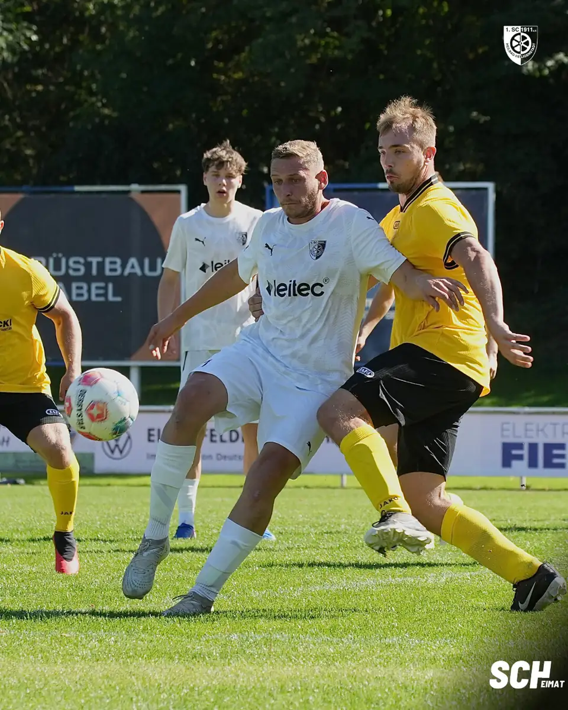
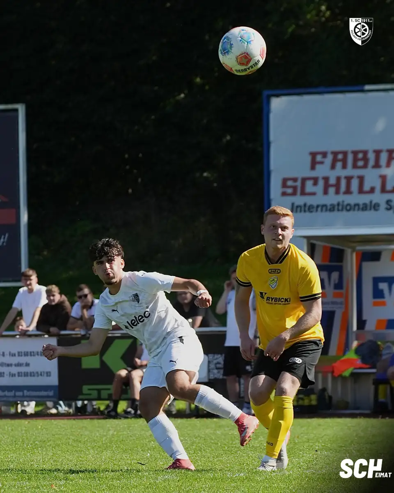
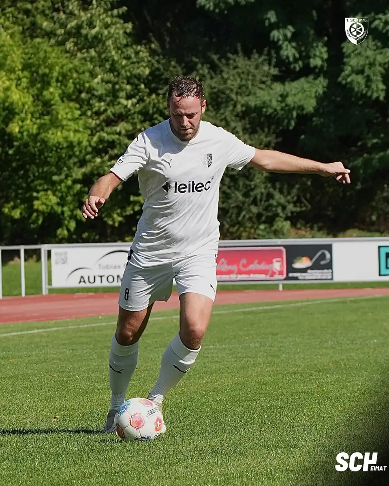
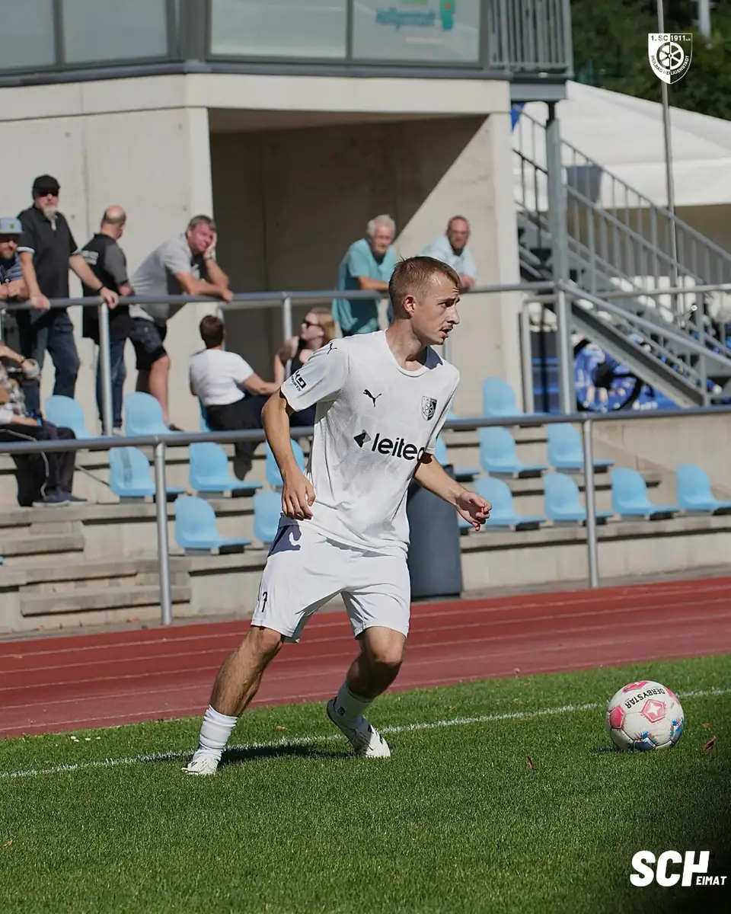
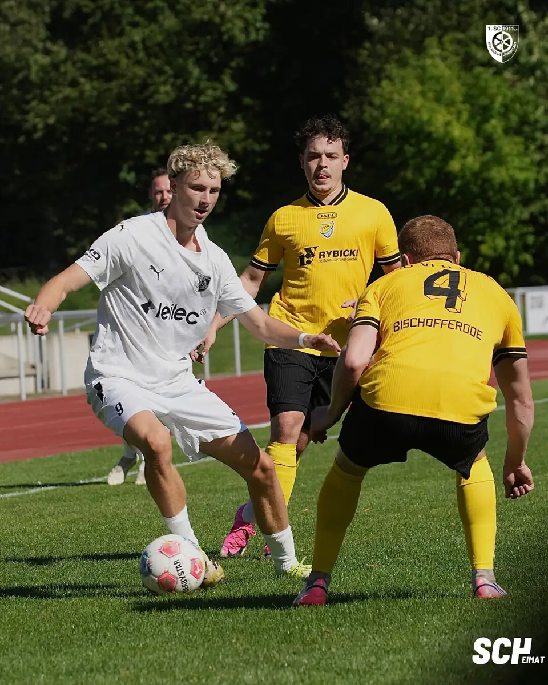
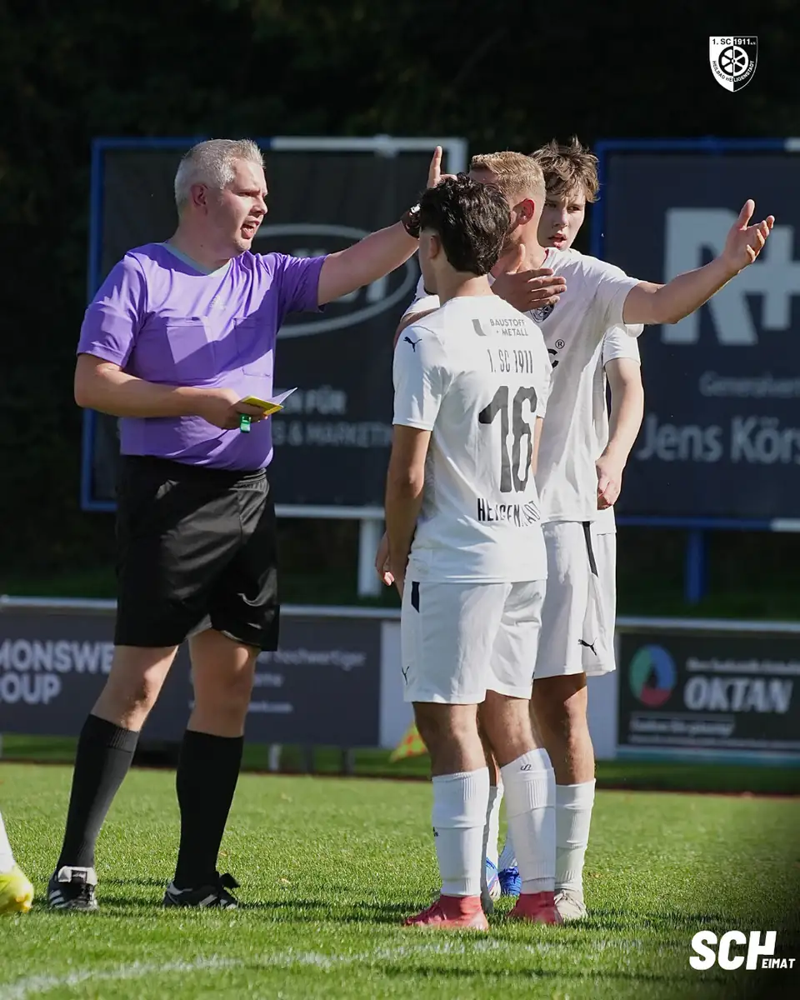
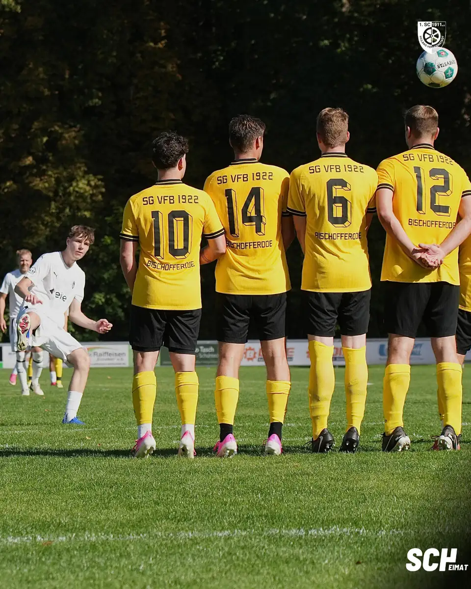
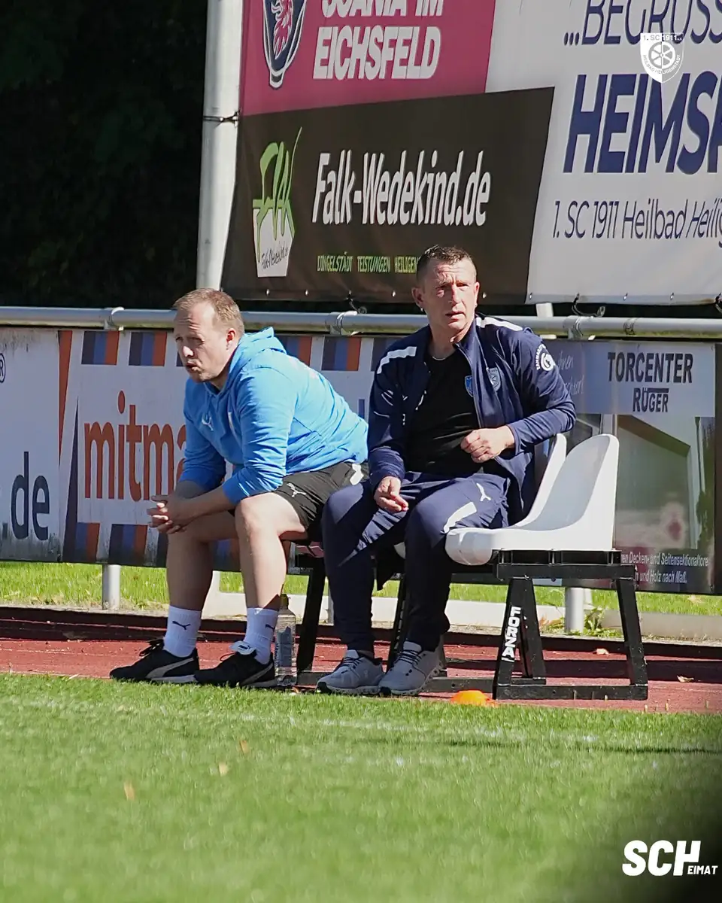
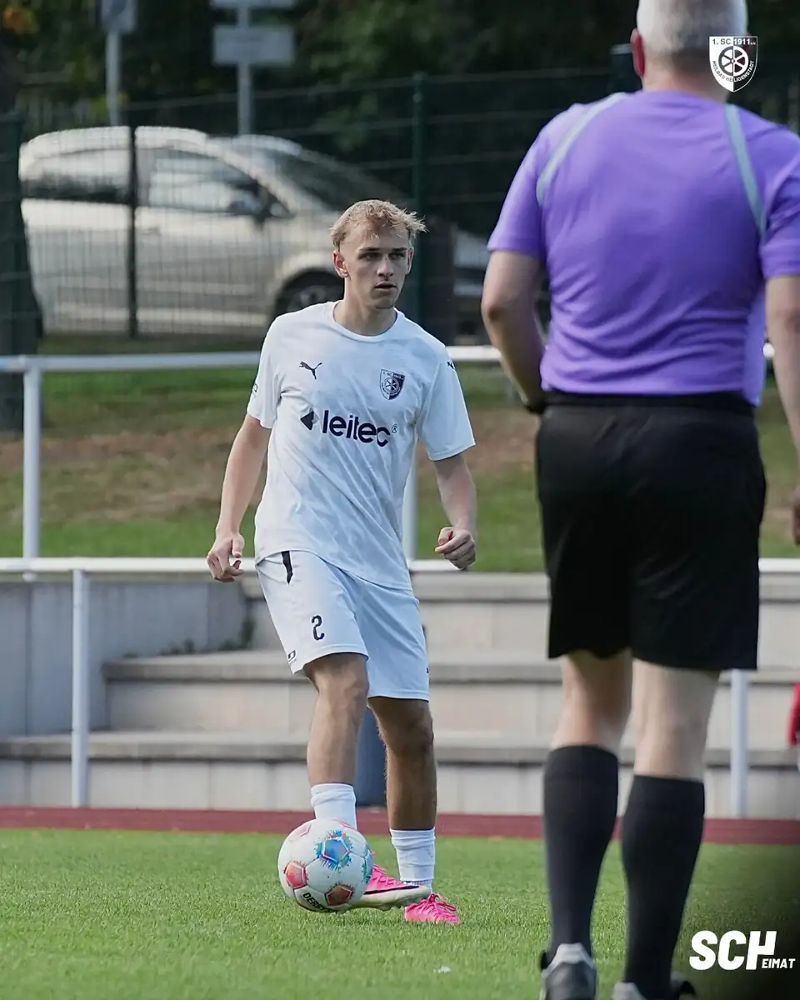
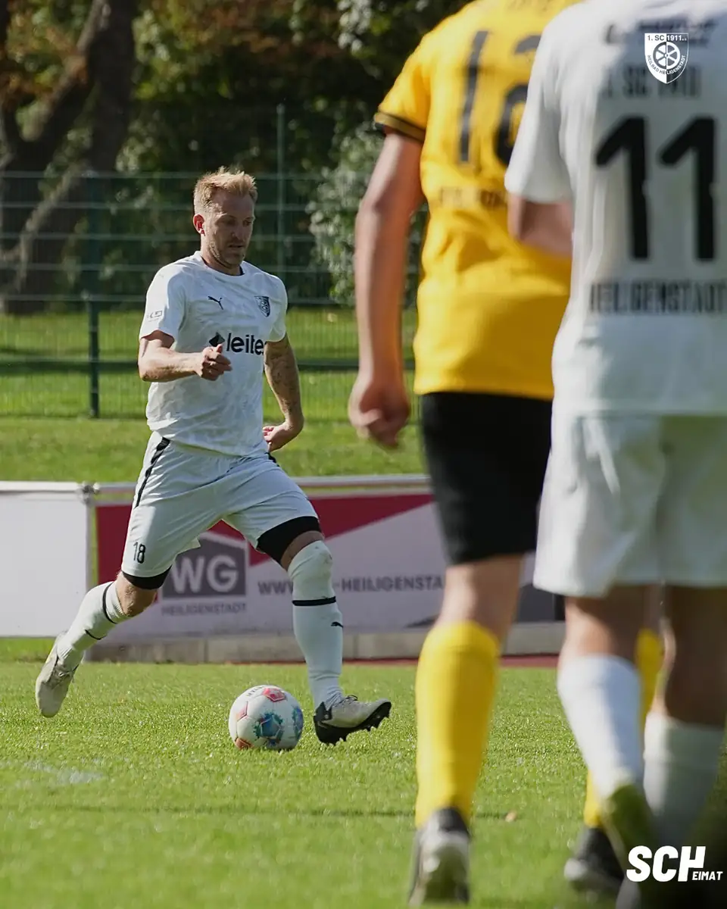
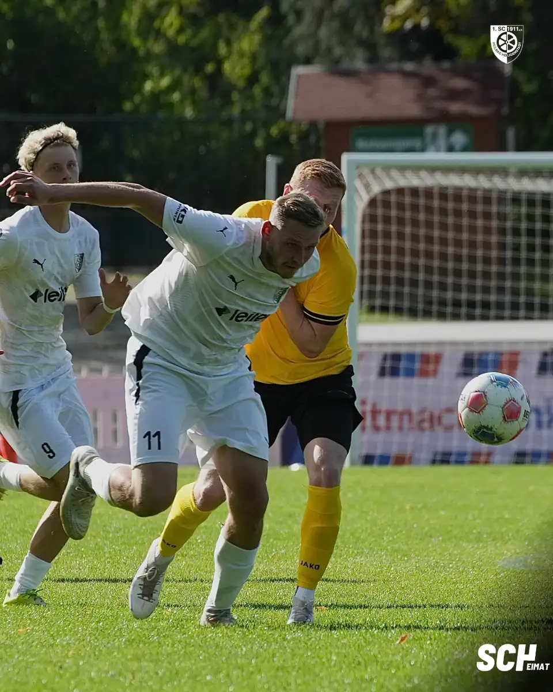
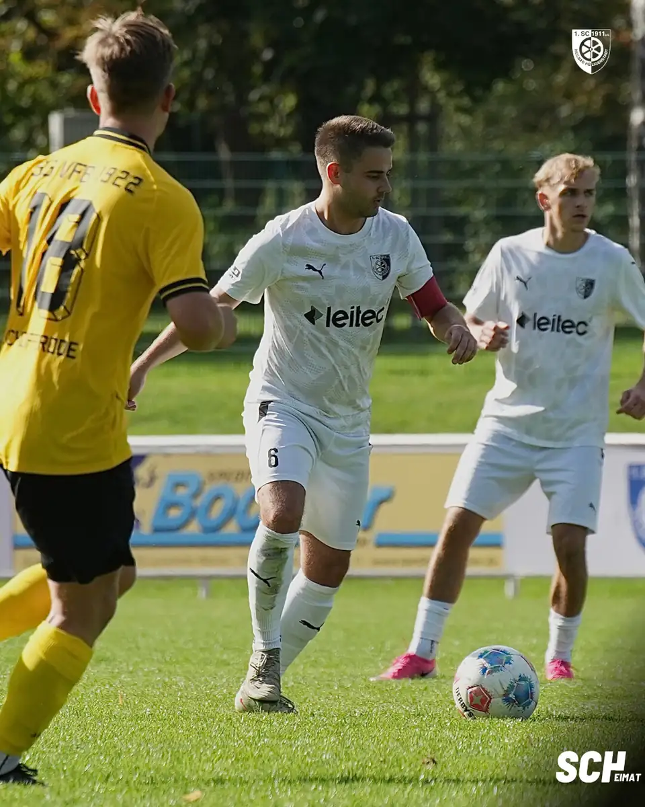
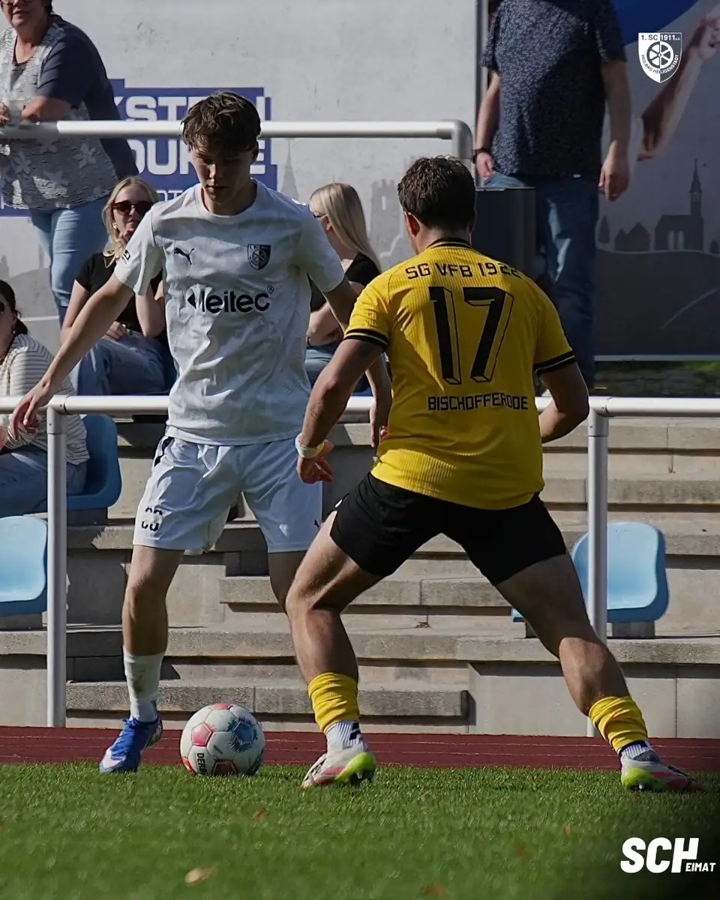